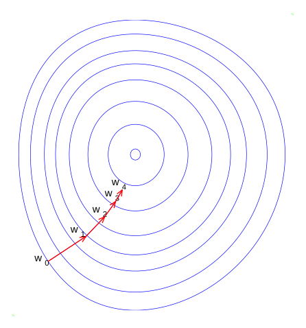
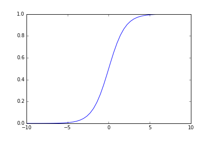

Introduction to Machine Learning and Data Mining
Neurocomputing
Kyle I S Harrington / kyle@eecs.tufts.edu
Some slides adapted from Geoffrey Hinton, UToronto; Tommi Jaakola, MIT.
Starting with Neuroscience
 Drawing of Purkinje cells (A) and granule cells (B) from pigeon cerebellum by Santiago Ramón y Cajal, 1899; Instituto Cajal, Madrid, Spain. Public domain.
Drawing of Purkinje cells (A) and granule cells (B) from pigeon cerebellum by Santiago Ramón y Cajal, 1899; Instituto Cajal, Madrid, Spain. Public domain.
Linear Threshold Units

From Growth to Learning
Hebb's learning rule: fire together, wire together
Hebbian Learning
$\Delta w_{kj} = \eta x_j y_k$
change weight $i$ proportinally to the product of the input and the output
Hebbian Learning
$\Delta w_{kj} = \eta x_j y_k$
Problems?
Supervised Method
How do we find weights that can produce a particular output?
Hinton's Fish and Chips
- Diet of multiple portions of fish, chips, and ketchup
- Cashier only gives total price of meal
Hinton's Fish and Chips
- Start with random guesses for the price of each portion
- After multiple days, should be able to know prices of individual portions
Delta-rule
$\Delta w_{kj} = \eta ( t_k - o_k ) i_k$
Gradient Descent

start with some $w_{(0)}$
do:
$w^{(t+1)} = w^{(t)} - \eta_t \nabla F(w^{(t)})$
until $||w^{(t+1)}-w^{(t)}|| \leq \epsilon$
Learning Rate
$w^{(t+1)} = w^{(t)} - \eta_t \nabla F(w^{(t)})$

Stochastic Gradient Descent
Given a stream of input/output samples
Update weights after each sample (online learning)
Stochastic Gradient Descent
Notebook!
Binary Classification
Predict a binary class, $y$, given a feature value, $x$
$P(y=1|x) > P(y=0|x)$
Log-odds Ratio
Rewrite $P(y=1|x) > P(y=0|x)$
As log-odds: $log \frac{P(y=1|\textbf{x})}{P(y=0|\textbf{x})} > 0$
Log-odds Ratio
$P(y|\textbf{x})$ is generally either unknown or estimated from samples
Linear approximation $log \frac{P(y=1|\textbf{x})}{P(y=0|\textbf{x})}$ as
$f(x;w) = w_o + x \cdot w_1$
Log-odds to Sigmoid
$log \frac{P(y=1|\textbf{x})}{P(y=0|\textbf{x})} = w_o + x \cdot w_1$
Instead we use
$P(y=1|x_i, w_{0,i} , w_{1,i} ) = g( w_{0,i} + x \cdot w_{1,i} )$
$g(z) = \frac{1}{(1+e^{-z})}$
Logistic Function
"Squishing function"
$f(x) = \frac{1}{1+e^{-x}}$
Regularization
Learn the weights with a penalty, $w$:
$\text{argmax}_{w} \displaystyle \sum^m_{i=1} P(y_i=1|x_i, w ) - \alpha R(w) $
Regularization Term
Regularization term, $R(w)$, forces parameters to be small when $\alpha>0$
L1: $R(w) = ||w||_1 = \displaystyle \sum^n_{i=1} |w_i|$
L2: $R(w) = ||w||_2 = \displaystyle \sum^n_{i=1} w_i^2$
L2 tends to be better at shrinking weightsFinal Project Proposal
Due March 7 (Monday)
What Next?
Clustering